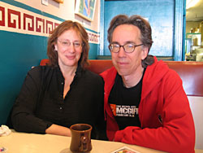
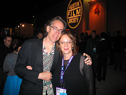
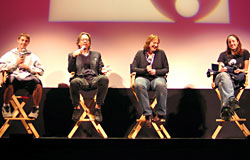

|

On Screen and In a New City, Austin Embraces The Pierson Family
By Eugene Hernandez
|

Over breakfast at Las Manitas in Austin, John and Janet Pierson talk with indieWIRE. Photo by Eugene Hernandez/indieWIRE
|
On the first day of the SXSW Film Festival and Conference earlier this month, John and Janet Pierson welcomed a few friends to their new home in Austin, TX. The afternoon gathering has become a regular event for some of their friends in Austin. Bob Berney from Newmarket dropped in for one of the Pierson's occasional cocktail hours, Variety's Dana Harris also visited. After a year living in Fiji showing free movies at the 180 Meridian Cinema on the island of Taveuni, John Pierson and his family returned to their home north of New York City for a brief period. But in August they packed their bags for new digs in Austin, a city that played an important role in Pierson's early career, after all it was where Richard Linklater made "Slacker," one of the many films documented in John Pierson's definitive story of the birth of the modern American independent film movement, "Spike Mike Slackers and Dykes" (recently re-issued as "Spike, Mike Re-loaded").
Last week, over three orders of 'migas con queso' at popular breakfast spot Las Manitas in downtown Austin, John and Janet Pierson sat down with indieWIRE to talk about their new lives in Texas. These days, aside from traveling to a few film festivals to talk about Steve James' Miramax doc about their time in Fiji, "Reel Paradise," the Pierson's have become key figures within the Austin film scene. John is teaching two production courses at the University of Texas' Radio-Television-Film department, while Janet has joined the board of the Austin Film Society, a group formed by Linklater and a few friends twenty years ago that has emerged as a leading organization supporting both the appreciation and production of movies. Having visited Austin many times since the "Slacker" days, John Pierson explained that he's always loved the city and after living in Fiji he didn't want to spend another cold winter in New York State.
"Playing football in bare feet on grass, on New Years Day, prior to settling in for some serious drinking and watching the Longhorns prevail in the last minute of the Rose Bowl, that's a Texas experience," laughed John Pierson over breakfast, recalling the first day of 2005 at Linklater's place in Austin.
During this year's SXSW, the 24 students in Pierson's advanced producing class at U.T. embarked on a unique class project, specifically working with their instructor to jointly rep the SXSW narrative competition film, "Cavite."
|

John and Janet Pierson at the Texas Hall of Fame event in Austin. Photo by Brian Brooks/indieWIRE
|
Janet Pierson saw Ian Gamazon and Neill Dela Llana's "Cavite" last year, months before her husband finally got around to watching it at her urging. He showed it to his U.T. students and they began to discuss what they might do about getting the movie out there.
"It is the new digital paradigm," said John of the film. "If you want to figure out how to do a film with nothing, but get it to completely use the modern, available technology, all to the good of the film and the strength of the impact, that's it." After the film screened at the Rotterdam Film Festival, the class worked with the filmmakers to recommend some re-editing, then they showed it to Pierson's larger 70 person production course for a bit of market research. Since that point, the students have worked with Pierson to strategize how to sell the movie. So far so good, after concocting a low-cost promo item involving a severed finger in an old cigarette pack, they also contacted buyers to tip them off to the movie. And at the film's first showing on the opening Saturday of SXSW, seated in what Pierson said that the fest's first ever "murderers row" of acquisitions executives were on hand at the Alamo Drafthouse in Austin for the film's screening. After the movie, a few buyers lingered, Berney from Newmarket, Eamonn Bowles of Magnolia, and Marjorie Baumgarten of the Austin Chronicle was there and new Sony studio exec Elvis Mitchell talked up the talent of the filmmakers. The film won an award at SXSW and now the students are anxious to participate in any meetings that might take place with potential buyers.
In Austin back in May to look at a house, Janet Pierson had dinner with SXSW festivals director Louis Black and his wife Ann Lewis. Days later she was nominated to the board of Linklater's Austin Film Society. "It's a great organization," noted Janet Pierson, "Rick (and his friends) started a community of people to watch movies with -- I think they are really a vital organization." Aside from her work with AFS, she added that she has been writing about her family's experiences in Fiji and also exploring other opportunities.
Last Monday at SXSW, large crowds settled in at the Paramount Theater for the first local screening of "Reel Paradise." Introducing the showing, SXSW film festival and conference producer Matt Dentler reflected on how important it is to him that John Pierson, author of the book that shaped his interest in independent films at a young age, is now here in Austin. Dentler has become a close friend of the Pierson family, spending time at their house to hangout, play ball, or watch TV. At Monday's screening, Pierson praised him saying he wishes Dentler were his own son, adding that SXSW's Louis Black is like a brother to him. After the screening John, Janet, Wyatt and an apparently reluctant Georgia Pierson took questions from the warm SXSW audience.
|

The Pierson family after the Paramount Theater screening of "Reel Paradise" (left to right: Wyatt, John, Janet and Georgia). Photo by Brian Brooks/indieWIRE
|
For the Pierson's, particularly John it seems, the "Reel Paradise" experience has been an eye-opener. John, a man who has shepherded numerous documentary films to national prominence (notably Michael Moore's "Roger & Me") is now the lead character in a documentary that is ultimately beyond his control. And now, with the anticipated demise of Miramax, in its current incarnation at least, the future of the film has been cast into question and Pierson is not in the driver's seat. Before Sundance this year, John Sloss, who represents Pierson family friends and the film's producers, Kevin Smith and Scott Mosier's View Askew, as well as director Steve James, stepped in to talk with Miramax about putting the film on the market at its world premiere during Sundance. Cinetic Media is still shopping the movie around and is closer to a deal to release the film, according to an insider at Sloss' company.
"This has been a complicated and confusing situation," explained John Pierson, sounding quite frustrated. He was asked to step back and not engage in the dealmaking or in strategizing the promotion process, seemingly for fear that the movie might look too much like a Pierson vanity project. "We just got no hands on work of any sort (prior to Sundance)," Pierson explained last week, having hoped that the company's dwindling PR department would gain exposure for the seemingly orphaned film before Sundance. "If I had known how that would go ahead of time, I would have overcome a kind of reserve about shoving myself into the fracas with a film that I am the subject of and my family is the subject of, just to try to accomplish certain things that didn't get accomplished."
Pausing, he added, "On the whole though I can't really complain because what we got was great, but we could have done a lot better."
"Steve (James) did a fabulous job," said John Pierson, talking about the documentary, "Obviously we helped arrange the funding, so there's the vanity part." Continuing he explained that the family also helped arrange many of the logistics for the month-long shoot during their final weeks in Fiji. James edited the film, sought feedback from the Pierson's, and later John and Janet would work to help clear some of the material in the movie, but the project remains a Steve James film.
"Reel Paradise" not only offers the story of a family, but also gives a unique look at the impact of popular American movies on people living in a remote village. Crediting James, what John Pierson says he likes about "Reel Paradise" is that it "allows people to enter a world and not necessarily come out feeling exactly the same about it."
"Whatever happens with the film publicly," explained Janet Pierson, "privately this has been a truly positive, amazing experience for the four of us. We kind of understand what it is now to be the subjects of a movie, in a way that none of us understood before, and we can laugh about it and we are tighter than ever and we get along better."
More Press...
|
 |
{% include sidebar.html %}
|
|